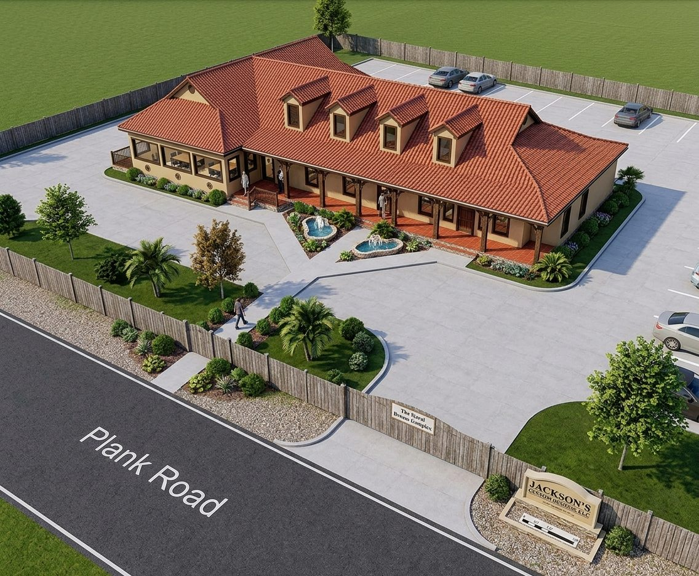
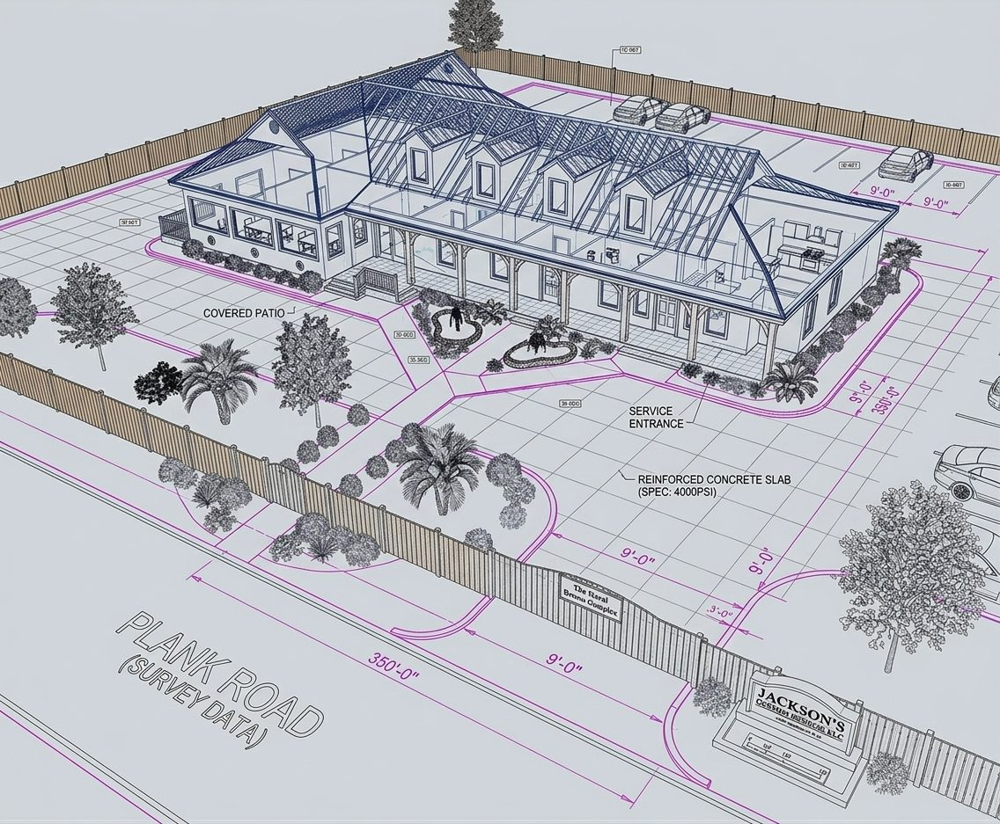

Ecosystem Facility · Innovation Hub
RDIC: the Rural Dream Innovation Complex.
Rural communities are starving for capital, training, and workspace. The Rural Dream Innovation Complex is conceived as the hub that supplies all three — an innovation, workforce-development, and entrepreneurial center anchoring the consortium’s flagship site in Greensburg, Louisiana.
Greensburg, LA — flagship site development LCDC-led real estate, EEC-coordinated programming Southern University SBDC partnership
The Concept
Answering the rural capital deficit
The RDIC strategic plan opens with the problem in one sentence: there is a starving capital deficit in innovative and valuable growth opportunities across rural communities. Without crucial access to capital, job growth, and rural economic development, the lag in prosperity relative to the rest of the country will keep rising. Small businesses are the lifeblood of these communities — and RDIC is conceived as the hub that supplies the capital, training, workspace, and entrepreneurial support they need.
RDIC originates as an initiative of Lighthouse Community Development Corporation, whose mission is to provide low- and moderate-income families and veterans with affordable rural housing and supportive services that build self-sufficiency — assisting families in the procurement of benefits and revitalizing communities by illuminating economic development opportunities and encouraging community service.
The complex’s operations order
In the consortium’s multi-program operations packet, RDIC’s mission summary is three phrases long: innovation hub, workforce development, tech & entrepreneurial support.
- Innovation hub — training rooms, co-working desks, and event space for rural founders who have nowhere else to build.
- Workforce development — TOWED trades tracks and employer-aligned certifications delivered on site.
- Tech & entrepreneurial support — digital-literacy labs with Net-WIRCing, coaching, and micro-capital readiness packaging with a CDFI partner.
The Greensburg Hub
Four components, one campus
The flagship Greensburg site development — evolved from the original Clinton / Plank Road concept — brings four coordinated components together.
Transitional housing
LCDC-led transitional housing pathways — stability first, with wraparound services and homeownership pathways beyond.
Café & culinary incubator
Café Kountry Gumbeaux and the Rural Culinary Incubator, developed with the Small Business Development Center at Southern University.
The RDIC itself
The innovation complex: training, co-working, capital access, and entrepreneurial support — the campus’s economic engine room.
Disaster preparedness & resiliency
The Disaster Preparedness, Recovery & Resiliency component, built with SBA, the American Red Cross, the Council on Aging, law enforcement, and local medical partners.


Inside the Complex
What happens under the roof
Training & classrooms
Bootcamp cohorts, TOWED workforce tracks, financial-literacy workshops, and the Homebuyer Self-Sufficiency Bootcamp — all delivered from dedicated training space.
Co-working & incubation
Affordable desks, meeting rooms, and back-office support for veteran-led ventures in the SEISMIC pipeline — plus mailboxes, printing, and broadband that rural founders otherwise drive an hour to reach.
Capital access
Micro-capital readiness packaging, CDFI partnership lanes, and the consortium’s pursuit of CHDO (Year 2) and CDFI status or partnership (Year 3) to unlock housing and community-lending capital.
The RDIC business plan is built with full commercial discipline — ownership and legal entity, location and interior plans, hours, products and services, management and financial management, plus complete financial projections: start-up expenses, capital requirements, cash flow, income projection, profit and loss, balance sheet, sales forecast, milestones, and break-even analysis. Dream big; underwrite bigger.
Anchor Partnership
The Southern University SBDC
The Louisiana Small Business Development Center at Southern University Baton Rouge (LSBDC SUBR) — a regional center serving seven parishes — is an active, ongoing partner of the consortium. Its services are tailored to veterans, service-disabled entrepreneurs, and historically underserved communities, and its collaboration with Lighthouse CDC is rooted in a shared vision: eliminate barriers and deliver community-based, comprehensive support for veterans.
Together the partners have co-hosted informational sessions and shared client referrals, with a strong emphasis on supporting women, veterans, and emerging rural entrepreneurs.
What the SBDC brings to RDIC
- On-site and virtual business consulting tailored to the needs of veterans — at no cost.
- Co-facilitated financial-literacy workshops.
- Partnered outreach: veteran-focused business resource fairs and community events across the Baton Rouge region and neighboring areas.
- A referral bridge into the statewide LSBDC network and Southern University’s Ag Center for the culinary and agribusiness tracks.
Why It Matters
The complex is the consortium made visible
The vision
This is just the beginning
Help raise the complex.
Funders, builders, anchor tenants, and training partners — the Greensburg hub has a lane for each of you.